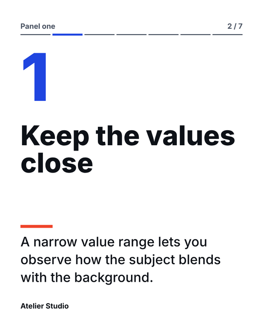
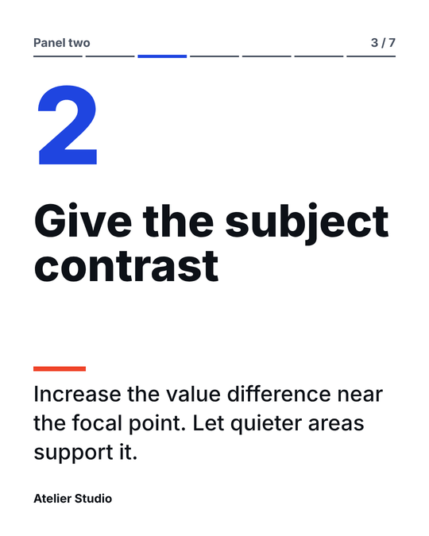
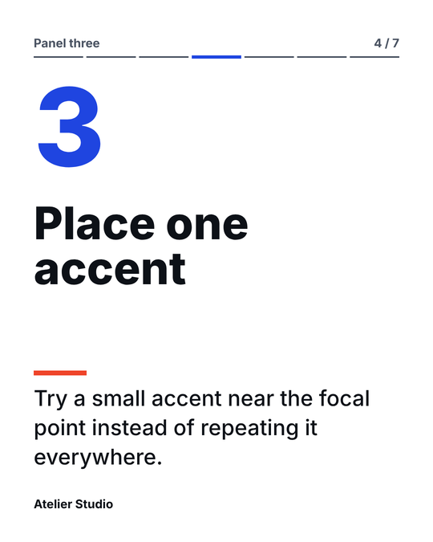

Every claim in your launch posts can point to what was said.
Paste the transcript of a webinar, product demo or talk you own. Claude drafts slides, reel scripts and posts in your own account, and the workbench checks that every piece cites a real passage before anything exports. The workbench uploads nothing.
- C00300:18
In the first panel, use a narrow range of values. Notice how little separation the subject has from the background.
- C00400:27
In the second panel, increase the value difference around the focal point, while leaving the rest of the scene quieter.
- C00600:45
In the third panel, add one small accent color near the focal point. Avoid scattering the accent across the whole scene.

from C003
from C004
from C006
You need your own Claude account for drafting. The kit checks where each line came from. Whether the wording is right is your call, and the workbench makes you confirm it before export.
How it works
Prepare the recording
Paste the SRT, VTT or plain transcript. Each passage gets an ID, so any line in the draft can be traced back to what was actually said.
Draft in your Claude
The webinar and product demo skills are part of the complete edition, which is not on sale yet. The free edition has the lesson skill and the full workbench, so you can try the whole process now.
Review before it goes out
The workbench rejects lines that cite passages that are not in your source, and reel times that do not match. You read every claim, fix the wording, approve, then export.
What you get
| Item | Free | Complete |
|---|---|---|
| Offline workbench: prepare, validate, edit, export | Yes | Yes |
| Lesson to carousel skill | Yes | Yes |
| Webinar to campaign skill | No | Yes |
| Product demo to launch skill | No | Yes |
| Worked examples with source, draft and renders | 1 | 3 |
| PNG slides at 1080 by 1350, PDF with selectable text, copy as Markdown | Yes | Yes |
| Edit slides, reel scripts and posts in forms, with a Copy button for each script and post | Yes | Yes |
| Five slide layouts, 4:5 posts and 9:16 stories, your brand colour, logo and cover photo | Yes | Yes |
Each draft contains
- A carousel of 5 to 10 slides
- 1 to 8 reel scripts, each with the source time range it draws on
- 2 to 12 posts, labelled by platform
- Review notes listing what the draft was unsure about
What it does not do
- It does not watch your video. It works from the transcript. Anything about what is on screen needs your own check.
- It does not make video. Reel scripts are scripts. There is no clipping or MP4 export.
- It does not post for you, and it does not download or scrape anything from the web.
- It does not prove a claim is true. It proves each line cites a real passage. Reading it is still your job.
- It does not include AI credits. Drafting happens in your Claude account, under Anthropic's terms for that account.
Not on sale yet
This page is a preview. The complete edition is planned as a single payment of $19. There is no subscription and no checkout on this page.
The free edition is complete in itself: one skill, one worked example and the full workbench.
Buying is switched off until the seller details, licence terms and delivery have been confirmed.
Questions
- Can I use it for a product launch?
- Yes, if you have the rights to the recording. Drafts are written from what was said, so a feature you want to mention has to be in the recording. You still check every claim before approval.
- Does it make up numbers or customer stories?
- The skills tell Claude not to add quotes, numbers, customers or results that are not in your transcript, and to list anything uncertain in review notes. The workbench cannot spot a made-up number that cites a real passage, so read the draft.
- Who sees our recording?
- The workbench sends nothing anywhere. When you paste the source into Claude, Anthropic processes it under the terms of your own account.
- Can I use it for client work?
- The draft licence allows you to make finished content for your own clients. Reselling or sharing the kit itself is not allowed. The licence is still being reviewed.
- What if the draft gets something wrong?
- Nothing exports until you tick the review box. The workbench catches lines that cite passages that do not exist. It cannot catch a paraphrase that changes the meaning, so read it.
- Is this made or endorsed by Anthropic?
- No. It is an independent product that works with Claude.